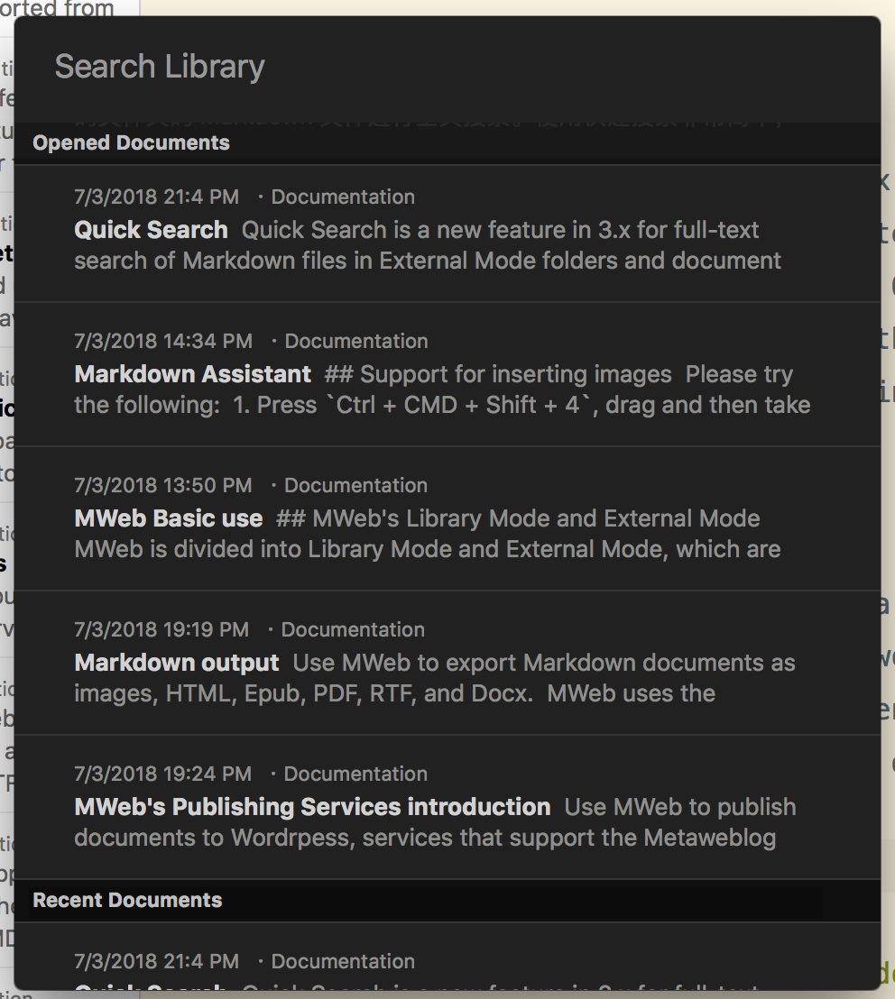
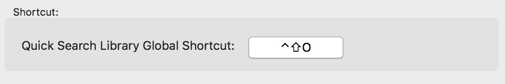
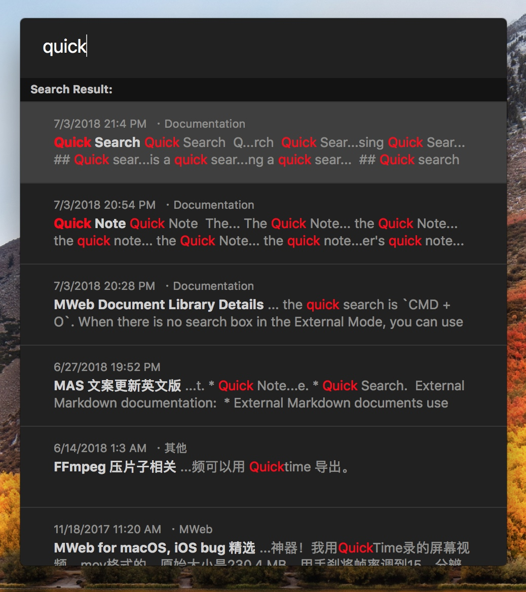
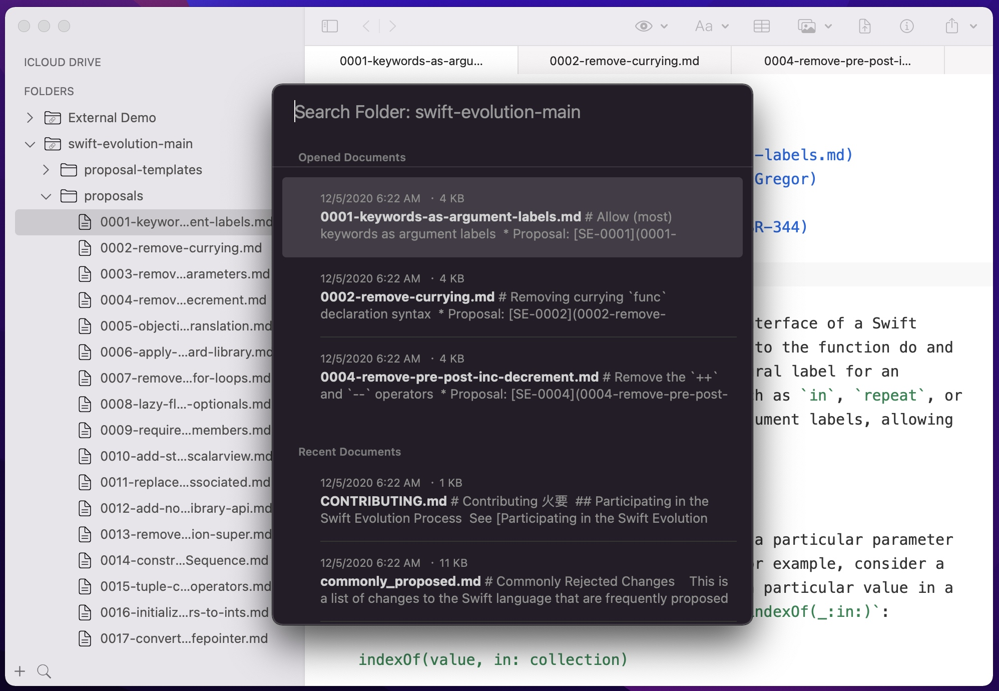
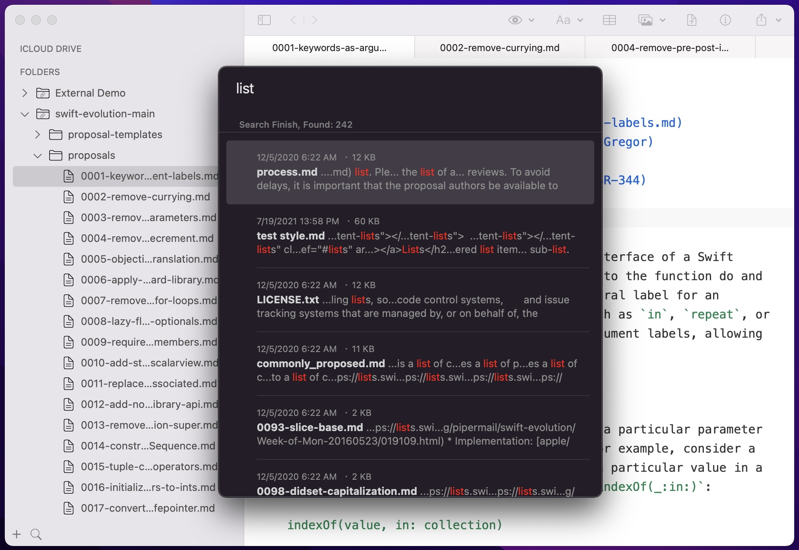

In MWeb for iPadOS/iOS, you can click the search box at the top to perform full-text search. In the macOS version of MWeb, there is has a quick search feature. The following instructions are related to the quick search feature of the macOS version of MWeb. Quick Search is a new feature in version 3.x and above for full-text search of Markdown files in Library or folders. Using Quick Search is as simple as pressing CMD + O in the Library mode interface or in the External Folder mode interface.
Quick search of the Library
The following image is a quick search of the document library. If the search keyword is not filled in, the currently open document and the most recently used document will be displayed.

Press the Down key to select the document and press Enter to open the selected document.
In addition, the document library search can also set a global search shortcut. Press this shortcut to search the document library at any time. This shortcut can be set in Preferences - General, as shown below:

The following image shows the results of opening a quick search and searching from the desktop after setting a shortcut.

Quick search for external mode
As shown in the figure below, the currently open document and the most recently used document are displayed without filling in the search keyword.

As shown in the following figure, press Down key to select the document, press Enter to open the selected document.

Search syntax
MWeb 3.1.8 and above support search syntax like below:
[keyword1] [keyword2]... [-c category1,category2...] [-t tag1,tag2...] [-h keyword1,keyword2,...]
For Example:
- If you fill: "MWeb Blog", it will search the document content that contains "MWeb" and "Blog" keywords.
- If you fill: "MWeb Blog -c cat1,cat2", it will search the document's categories contains "cat1" and "cat2" and the content contains "MWeb" and "Blog" keywords.
- If you fill: "MWeb Blog -h key1,key2", it will search the document's title contains "key1" and "key2" and the content contains "MWeb" and "Blog" keywords.
- In External Mode, If you fill: "MWeb Blog -h key1,key2", it will search the document's file name contains "key1" and "key2" and the content contains "MWeb" and "Blog" keywords.